Deep Dive into an ORM:
The Entity Framework Core Query Pipeline
whoami
- Shay Rojansky
- Engineer at Microsoft, part of the Entity Framework/Data team
- Lead dev of Npgsql
- .NET driver for PostgreSQL
- PG provider for Entity Framework Core
- Linux guy
- Based in Berlin
What’s this about?
- Not a talk about low-level intrinsics/GC/JIT/assembly
- Not a talk about EF Core 3.0 new features
- Deep dive into how an ORM works
- Lots of architecture (and performance!)
Reminder about ORMs
- Without ORMs, devs have to:
- Write SQL (without compile-time verification)
- Serialize/deserialize results (materialization)
ORMs and .NET
- C# is unique because it has LINQ
- ORMs in other languages define their own operator functions
- However: LINQ can express far more than what is translatable to SQL
Entity Framework Core
- We had LINQ to SQL, EF6…
- EF Core 3.0 just released
- Query pipeline got rewritten
- Unique: not just for relational databases (SQL)
Let’s Talk about Expression Trees!
Expression Trees
Func<int, bool> comparer = num => num < 5;
Expression<Func<int, bool>> comparerExpression
= num => num < 5;
Func compiled = comparerExpression.Compile();
var numParam = Expression.Parameter(typeof(int), "num");
Expression<Func<int, bool>> comparerExpression2 =
Expression.Lambda<Func<int, bool>>(
Expression.LessThan(
numParam,
Expression.Constant(5)),
numParam);
var compiled2 = comparerExpression2.Compile();
Expression Trees - For Perf
- Great solution for code generation
- Generate specific, tailored lambdas based on config/user input
- Compiled delegates run (almost) as fast as if they were written by hand
Expression Trees - Alternatives
Roslyn - high-level source representation
T4 - source representation with templates
Expression trees
Reflection.Emit - low-level IL
IQueryable
- Up to now we compiled expression trees to IL for execution
- IQueryable allows building providers which execute trees in other ways
- ORMs: take the expression tree, convert it to SQL, send it to DB and materialize the results
Let’s Get Translating!
Null Semantics
Let’s translate this:
employees.Where(c => c.FirstName == c.LastName)
SELECT ... FROM Employees WHERE FirstName = LastNameCould be wrong, SQL has three-valued logic
In SQL, FirstName = NULL is never true… (and it ain’t false either :))
Null Semantics 2
Try to mimic C# behavior (best-effort only!)
WHERE FirstName = LastName OR
(FirstName IS NULL AND LastName IS NULL)
If one of the columns is non-nullable in the database schema, we can optimize
Counter-example: case-sensitivity
Subqueries
Let’s get complicated:
employees.Where(e => e.Tasks.Count == 2)
SELECT ...
FROM Employees AS e
WHERE (
SELECT COUNT(*)
FROM Tasks AS t
WHERE t.EmployeeId = e.Id
) = 2;
Instance Equality
What about this?
employees.Where(e => e == e.Boss)
WHERE e.Id = Boss.Idemployees.Where(e => e.Tasks.First() == x)
WHERE (SELECT ... FROM Tasks ...).Id1 = x.Id1
More Instance Equality
Now, what happens if something has a composite key?
WHERE Id1 = Boss.Id1 AND Id2 = Boss.Id2employees.Where(e => e.Tasks.First() == x)WHERE (SELECT ...).Id1 = x.Id1 AND (SELECT ...).Id2 = x.Id2Double evaluation… Better not do this!
Related Instances
In C#, “related instances” are just there in memory.
employees.Include(b => b.Tasks)SELECT ...
FROM Employees AS e
LEFT JOIN Tasks AS t ON e.Id = t.EmployeeId
ORDER BY e.Id, t.Id
- Previous versions of EF Core translated this with multiple queries
- Multiple roundtrips vs. “cartesian explosion”
- Transactionality
Untranslatability
What to do about this?
employees.Where(e => SomeFunc(e))
Previous versions: translate to server if we can, otherwise evaluate on client
- Can bring lots of data to client
- Adding a new translation can break behavior
EF Core 3 throws, except for top-most projection
Lessons Learned
- There are many, many mismatches between C# LINQ and SQL
- ORMs need to make decisions about how to translate
- We need to do many things to expression trees before they can be converted
Zoom out: How to do all this?
Query Pipeline: Inputs and Outputs
- Input: LINQ expression tree (from IQueryable)
- Outputs (for relational)?
- SQL
- Shaper / materializer, to read results (DbDataReader)
- We are building a compiler!
Architecture
- The query engine is architected as a pipeline of visitors
- Each visitor traverses the expression tree, responsible for doing one thing
Example Visitor
- For example, the instance equality visitor:
- Traverses the entire tree
- Identifies equality expression over instances
- Replaces with equality over their keys
Minimal Visitor Exercise
Exercise: optimize an expression tree, eliminating needless null checks on non-nullable database columns:
// INPUT:
customers.Where(c => c.Age > 18 && c.Name != null)
// OUTPUT:
customers.Where(c => c.Age > 18)
class MyVisitor1 : ExpressionVisitor
{
protected override Expression VisitBinary(BinaryExpression b)
{
var visited = (BinaryExpression)base.VisitBinary(b);
if (b.NodeType == ExpressionType.NotEqual)
{
if (b.Right is ConstantExpression rightConstant &&
rightConstant.Value == null &&
!IsNullable(b.Left))
{
return Expression.Constant(true);
}
// TODO: Sides may be flipped!
}
return visited;
}
}
customers.Where(c => c.Age > 18 && true)
class MyVisitor2 : ExpressionVisitor
{
protected override Expression VisitBinary(BinaryExpression b)
{
var visited = (BinaryExpression)base.VisitBinary(b);
if (b.NodeType == ExpressionType.AndAlso)
{
if (b.Right is ConstantExpression rightConstant &&
rightConstant.Value is bool boolValue &&
boolValue)
{
return b.Left;
}
// TODO: Same for other side!
}
// TODO: Also take care of OrElse!
return visited;
}
}
customers.Where(c => c.Age > 18)
Recap
From this:
customers.Where(c => c.Age > 18 && c.Name != null)customers.Where(c => c.Age > 18 && true)customers.Where(c => c.Age > 18)EF Core Preprocessor
public virtual Expression Process(Expression query)
{
query = new EnumerableToQueryableMethodConvertingExpressionVisitor().Visit(query);
query = new QueryMetadataExtractingExpressionVisitor(_queryCompilationContext).Visit(query);
query = new AllAnyToContainsRewritingExpressionVisitor().Visit(query);
query = new GroupJoinFlatteningExpressionVisitor().Visit(query);
query = new NullCheckRemovingExpressionVisitor().Visit(query);
query = new EntityEqualityRewritingExpressionVisitor(_queryCompilationContext).Rewrite(query);
query = new SubqueryMemberPushdownExpressionVisitor().Visit(query);
query = new NavigationExpandingExpressionVisitor(...).Expand(query);
query = new FunctionPreprocessingExpressionVisitor().Visit(query);
new EnumerableVerifyingExpressionVisitor().Visit(query);
return query;
}

SQL Translation
- We’ve been talking about LINQ methods, but… at some point we want a model of an SQL query.
- Instead of CLR types, methods and members, we want tables and columns.
customers
.Where(c => c.Name == "Joe")
.OrderBy(c => c.Age)
.Take(5)
.Select(c => new { c.Name, c.Age });


SELECT Name, Age FROM Customers
WHERE Age > 18
ORDER BY Age
LIMIT 10
SQL Translation 2
Still expressions, but now custom SQL ones!
customers.Where(c => new[] { 1, 2, 3 }.Contains(c.Id));
// Becomes:
WHERE c.ID IN (1, 2, 3) // This is an SqlInExpression
Expression trees can have custom expression types
Non-relational providers will do something completely different
Provider and User Translations
customers.Where(c => c.Name.Length > 5)
// Becomes:
WHERE LEN(c.Name) > 5 // On SqlServer
WHERE LENGTH(c.Name) > 5 // On PostgreSQL
Users can define functions which render into arbitrary SQL expressions
End of the Line
- Some more postprocessing after SQL translation
- QuerySqlGenerator is just another visitor, outputs an SQL string
- Another visitor code-generates the shaper
(…with… expression trees…)
Query Pipeline Overview

Let’s talk about Perffffff
Parameterized Queries
var posts1 = ctx.Posts.Where(p => p.Title.Contains("dotnetos"));
var title = "dotnetos"; // Read from somewhere
var posts2 = ctx.Posts.Where(p => p.Title.Contains(title));
SELECT ... FROM Posts WHERE STRPOS('dotnetos') > 0;SELECT ... FROM Posts WHERE STRPOS(@p) > 0;- Can leverage cached plans and prepared queries
- Closure variables are your way of asking for parameterization
Compilation is Slow
- No way we run all these visitors each time
- The answer is always, always… caching.
- Input: expression tree. Outputs: SQL+shaper.
Structural Comparison
We can just do recursive structural comparison:
var posts = ctx.Posts.Where(p => p.Title.Contains("dotnetos"));
Parameter Extraction
var title = "dotnetos"; // Read from somewhere
var posts2 = ctx.Posts.Where(p => p.Title.Contains(title));
- Before checking the cache, identify parameter references (to closure variables)
- Extract them out and replace them with placeholders, “punching holes in the tree”
Zoom out Again

- Parameter extraction
- Cache key hashcode calculation
- Structural comparison with trees in the query cache
Compiled Queries
using (var ctx = new MyContext())
{
var id = 8;
var posts = ctx.Posts.Single(p => p.Id == id);
}
// Create an explicitly compiled query
private static Func<MyContext, int, Post> _postById
= EF.CompileQuery((MyContext ctx, int id) =>
ctx.Posts.Single(p => p.Id == id));
// Use the compiled query by invoking it
using (var ctx = new MyContext())
{
var post = _postById(ctx, 8);
}
Not always so easy
Remember our InExpression from before?
customers.Where(c => new[] { 1, 2, 3 }.Contains(c.Id));
WHERE c.Id IN (1, 2, 3)
var customerIds = new[] { 1, 2, 3 };
customers.Where(c => customerIds.Contains(c.Id));
Solution :(
Expand to constant at execution time:
var values = new[] { 1, 2, 3 };
ctx.Posts.Where(p => values.Contains(p.Foo));
WHERE p.Foo IN (1, 2, 3)
- Pollutes database query cache
- PostgreSQL has
WHERE p.Foo = ANY (@p)
Closing Words
- Writing an ORM is… complex :)
- Being aware of what happens under the hood is always important.
- Check the SQL being generated!
Actual Heroes
Smit Patel
(new query pipeline architect)
Maurycy Markowski
(big query guy and also a Polish guy!)
And of course … the rest of the EF team
Thank you!
Shay Rojansky
Blog & Presentation: http://roji.org
Twitter: @shayrojansky